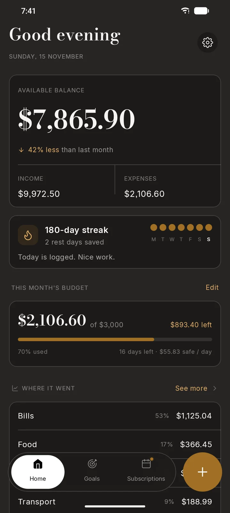
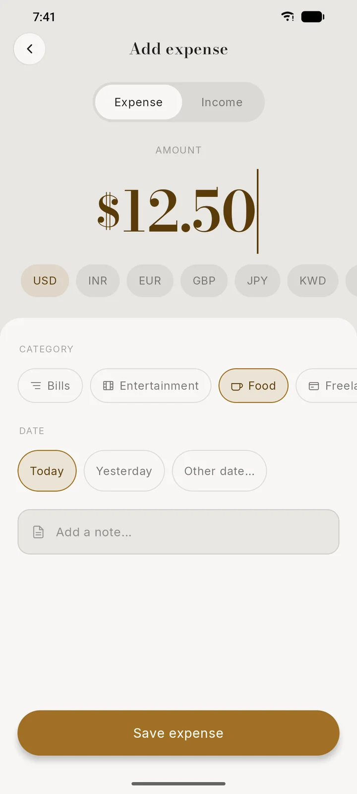

एक नज़र में
बैलेंस, बजट और रोज़ खर्च की सुरक्षित राशि।
एक शांत स्क्रीन बताती है कि महीना कहाँ खड़ा है।
Pocket Glance
Android के लिए एक शांत और निजी बजट ट्रैकर। कोई बैंक लॉगिन नहीं। कोई खाता नहीं। कोई विज्ञापन नहीं।

एक शांत स्क्रीन बताती है कि महीना कहाँ खड़ा है।

स्ट्रीमिंग, फ़ोन, जिम, बीमा: सभी आवर्ती बिल एक ही जगह।

रकम, श्रेणी, बस हो गया।

साफ़ ब्यौरा, और यह भी कि खर्च बढ़ रहा है या घट रहा है।

एक यात्रा, एक लैपटॉप, एक इमरजेंसी फंड।

बचा हुआ बजट, अगला भुगतान और लक्ष्य की प्रगति, ऐप खोले बिना।
Pro सालाना सब्सक्रिप्शन या एक बार की लाइफ़टाइम खरीद के रूप में उपलब्ध है, जिसका भुगतान Google Play संभालता है। विवरण के लिए शर्तें देखें।